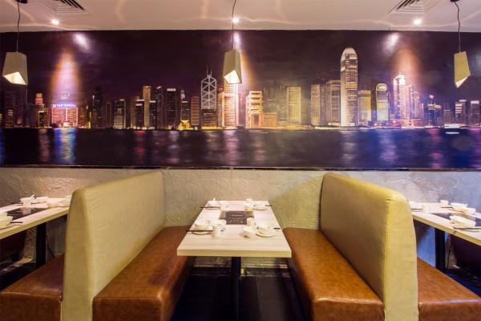

餐厅由一对情侣跨界主理，男老板是个帅酷的香港大叔，平日往返粤港两地做医学培训，虽然骨子里有着“百年老店还差九十九年”的诙谐， 却用搞医学的态度谨慎挑选食材。而主播出身的女老板则是个美厨娘，善于研究与设计。虽然店内只有一百平米， 但每针每线都源自女主人的心血，市场里淘回来的挂画，手动制作的食材屏风，连灰色天花板上隐隐约约透出的金粉细节都不放过。 最炫目当属墙壁上那六七米长的巨幅手绘维港夜景，让人仿佛置身于香港街头。
推荐：缤纷海鲜拼盘、原只水鱼、鲜活北极贝、活泼象拔蚌、枫叶国肥牛、一鸣惊人(靚鸡)、特区蟹柳、步惊云吞、鱼腐小姐、港式简餐。
上一篇：111111111
下一篇：2222222222222